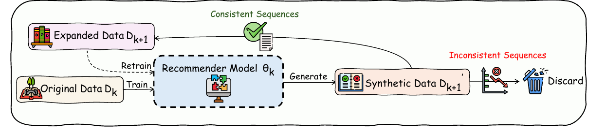
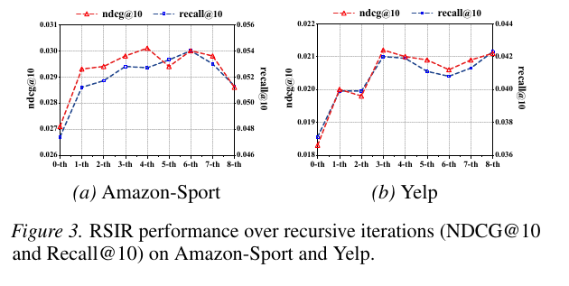
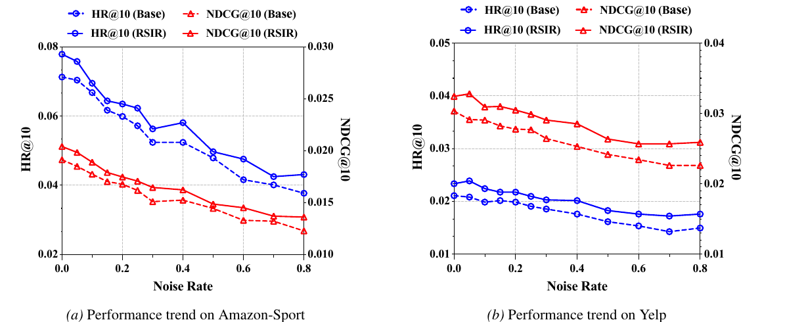

Train a recommender on the current dataset using next-item prediction.
ICML 2026
Can Recommender Systems Teach Themselves?
A recursive self-improving framework with fidelity control for sparse sequential recommendation.
Luankang Zhang, Hao Wang, Zhongzhou Liu, Mingjia Yin, Yonghao Huang, Jiaqi Li, Wei Guo, Yong Liu, Huifeng Guo, Defu Lian, and Enhong Chen. Can Recommender Systems Teach Themselves? A Recursive Self-Improving Framework with Fidelity Control. In Proceedings of the 43rd International Conference on Machine Learning (ICML 2026), Seoul, South Korea, 2026.

Recursive Self-Improvement Without External Teachers
RSIR turns a recommender into its own data generator. The generated data is not accepted blindly: a fidelity check keeps the loop close to plausible user preference trajectories.
Use the trained model to create synthetic user interaction sequences.
Accept generated steps only when they pass the fidelity-based rank check.
Merge valid synthetic sequences with the training set and train a successor model.
Code
The repository exposes two modes: `recommendation` for model training and evaluation, and `generation` for RSIR augmented data creation.
python run.py -m SASRec -d amazon-toys --trainfile "" --mode recommendation --device 0python run.py -m SASRec -d amazon-toys --trainfile "" --mode generation \
--theta_r_path saved/SASRec/amazon-toys/<checkpoint>.ckpt \
--output_trainfile "_1th" --device 0Experimental Highlights
The paper reports consistent gains across sparse recommendation datasets, shows that the gains can compound over recursive rounds, and verifies that fidelity control prevents recursive generation from collapsing.
+4.56%
Amazon-Toys Recall@10
SASRec improves from the best non-RSIR baseline at 0.0834 to 0.0872 with RSIR.
0.0528
Amazon-Sport 3rd round
Recall@10 rises from 0.0474 at the base round to 0.0528 after recursive self-improvement.
0.3861
Information density
Approximate Entropy reaches 0.3861 by RSIR-8th, while naive insertion drops to 0.3136.
| Dataset | Best non-RSIR Recall@10 | Best RSIR Recall@10 | Relative gain |
|---|---|---|---|
| Amazon-Toys | 0.0834 | 0.0872 | +4.56% |
| Amazon-Beauty | 0.0557 | 0.0594 | +6.64% |
| Amazon-Sport | 0.0495 | 0.0512 | +3.43% |
| Yelp | 0.0379 | 0.0399 | +5.28% |



On Amazon-Sport, removing fidelity control causes the 3rd recursive round to fall to 0.0210 Recall@10, while RSIR with fidelity control reaches 0.0528.
Citation
@inproceedings{zhang2026rsir,
title = {Can Recommender Systems Teach Themselves? A Recursive Self-Improving Framework with Fidelity Control},
author = {Zhang, Luankang and Wang, Hao and Liu, Zhongzhou and Yin, Mingjia and Huang, Yonghao and Li, Jiaqi and Guo, Wei and Liu, Yong and Guo, Huifeng and Lian, Defu and Chen, Enhong},
booktitle = {Proceedings of the 43rd International Conference on Machine Learning},
series = {Proceedings of Machine Learning Research},
volume = {306},
year = {2026}
}